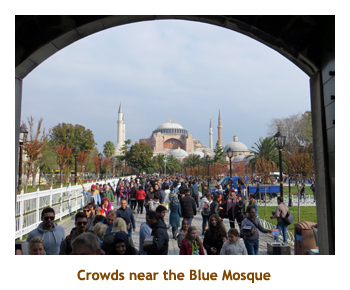
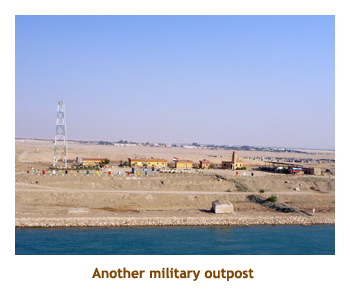
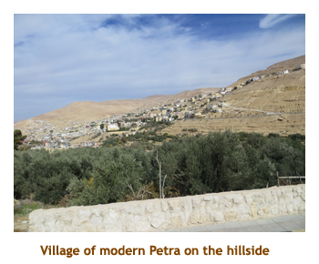
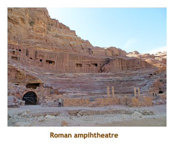
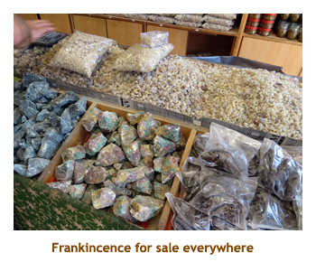

|
Home
Travel
Cruises
Past Cruises (Diaries)
Future Cruises
Rogues Galleries
Land Trips
Diaries (Land Trips)
Hawai'i
- Big Island - 04'01
Hawai'i
- Maui - 05'02
Hawai'i
- Big Island - 04'03
Hawai'i
- Kaua'i - 09'04
Hawai'i
- Big Island - 04'06
Hawai'i
- Maui - 04'06
Mainland China
- 05'07
Phoenix, Arizona
- 12'07
Greek Isles
- 05'08
Hawai'i
- Kaua'i - 09'08
Hawai'i
- Big Island - 09'09
Hawai'i
- Maui - 05'12
Hawai'i
- Big Island - 04'13
Ireland
- 08'13
Mexico
- Cancun 11'13
France/Belgium/Lux 07'15
Hawai'i
- Big Island - 05'17
England
/ Wales - 06'17
Hawai'i
- Big Island - 09'19
Photography
Cameras
Underwater
Pets
Tara
Blackie
Whitey
Muffy
Ollie
Rusty
Fluffy
Rufus&Dufus
Games
Rowing
Physics
|
|
Rating (out of 5):
Ship  Food
Food  Service
Itinerary
Service
Itinerary
This cruise was originally an Israel / Egypt focused cruise when Dave & Joan booked it
a year ago. We were not that interested as we had done Egypt and Israel on a previous cruise.
However, when due to political upheavals the Israeli and Egytptian ports were replaced with
other more interesting ports (Turkey, Cyprus and Greek islands - all new to us), we jumped
on it when TA rates were offered. However, just before sailing it was changed back to the original
itinerary. Regardless, we had a really great cruise and enjoyed every minute of it. I have made a
separate page
detailing the itinerary changes if you are interested. From a mariner perspective, we
sailed across many famous (and infamous) bodies of water. This extra itinerary page also
has a schedule of the many bodies of water that we traversed.
We had been on the Nautica twice before and found it to be the same wonderful
experience. We are still not small ship people, but the rooms, the food and the service
were wonderful. I gave the itinerary only 4 stars because we were really looking
forward to the "replacement" ports and were a bit disappointed that the Israel and
Egypt ports were reinstated. There were 566 passengers aboard, somewhat short
of the 684 capacity. About half were American, with a Canadian contingent of some 130
people.We didn't do any of the entertainment offerings as we don't really care for the seating in
the lounge versus a real theatre with sloped seating. And, as usual, I made heavy use of Waves
for lunch usually having a milkshake and a turf & surf burger for lunch.
Due to the fact that we hadn't joined any private tours, we were doing all ship's excursions.
Hence we decided to buy the "Unlimited Passport" option where for a single price one
could select whatever excursions for each port. Due to the changes of itinerary this
worked out well as we could change our excursions without having to worry about price.
The only excursion that we had to pay a surcharge for was the 12 hour Petra trip in Jordan because
it was so expensive. Complementing the ports that we visited was a guest lecturer who
did a series of lectures on Middle East politics and history. I thoroughly enjoyed Hassan's
talks as he was extremely knowledgeable about the area and really captured my interest.
My final comment re the cruise as a whole is that many passengers (including us)
had some misgivings about the safety of some of the ports and our passage through Somali waters.
In retrospect our fears were unfounded, although an Israeli soldier was killed in Jerusalem just the
day before we visited there.
One of the main reasons for doing this cruise was to snorkel the Rea Sea and the Arabian Sea (Gulf of Oman).
We took lots of photos of the fish at each stop.
To keep this diary to a reasonable size, I have put most of the fish pictures on a separate page.
*** If you wish to see more fish pictures click here
==> More Fish
***
Pre-cruise (Oct 30, 31) - Travel to Istanbul
As usual, we booked to come into Istanbul a day early both to help with the time change
and to ensure a flight screwup would not cause us to miss the cruise. We had been several times
to Istanbul and seen all the noteable sites, so one extra day would be plenty. We were picked up
by friends Ian and Shirley (yes, our Celebrity cruise buddies a month ago) about 5:45 PM and delivered
safely to the airport by 6:15. Our flight to London at 8:55 was a bit late, but we got into Heathrow
at 12:15 PM the next day. We went through customs and then on to our gate for a 4:20 PM flight to Istanbul.
This flight was also a bit late, getting us into Istanbul at 10:30 PM. As we disembarked from the plane
there were a couple of guys with "pickup" name signs in the secured area. What? We passed through customs
(using our electronic visa purchased online a month ago) and gathered our checked bags. As we exited
into the public waiting area there was a pickup sign with our name on it. Actually there were
probably 30 pick up signs, so it took us a while to find ours. Good start!! We shuttled to the
Arena Hotel and went immediately to bed (with sleeping pills). It had been a long day.Happy Hallowe'en!!
Pre-cruise (Nov 1) - A day in Istanbul
We woke up about 9:30 AM. We hadn't booked any tours in Istanbul so we had the whole day
to just wander about. We had breakfast in the hotel - a buffet of fruits, veggies, cereals, yoghurt,
baked breads, etc. Then we headed out for a walk. It was maybe 18 degrees, so we needed
sweatshirts or jackets. We walked around the hippodrome area and took pictures of the Blue
Mosque and the Hagia Sofia. We continued northward to Gulhane Park and wandered through
the trees and gardens. All of the flowers had been dug up for winter. We went to the overlook
at the end of the park and could see across the Golden Horn to where our ship was docked,
just in front of the Azamara Quest (another R-Boat). Walking back to our hotel we decided to
look for the Amedros restaurant where we had agreed to meet D&J for dinner. No problem!
Back at the hotel we found a restaurant next door for a kabob lunch. Then we went to our room
for a read and an afternoon nap. We left for the restaurant about 5:00 and met D&J there. I
was still feeling my lunch, so I just had a bowl of tomato soup. It was very good. Afterwards we
wandered around the now dark hippodrome and took some photos of the lit up Blue
Mosque. We said goodbye to D&J and headed back to our hotel to read until 9:30. Then
we called it a day.
| |
|
 |

|
|
|
|
|
Day 1 (Nov 2) - Boarding in Istanbul
We were up a bit earlier today at 8:00. It was cool and cloudy, about 18 degrees.
We had another good breakfast in the hotel. We hung around the hotel area
until 11:00 and then caught a cab to the ship. The hotel had estimated 20
Turkish Lira for the trip, but the cabbie asked for 35 Lira. When I mentioned
the hotel estimate he agreed and said 20 Lira for the passengers and 15 Lira
for the luggage. Sigh! Another contribution to the Turkish economy. We dropped
off our luggage and proceeded through checkin where they collected our passports.
We went straight up to the lunch buffet, which was very good, and then wandered
the ship waiting for our cabin to be ready. We sat in comfy lounge chairs
and at 2:30 the cabins were announced as ready. Marjorie had booked our cruise
at TA rates and was limited to an ocean view cabin. We checked with the concierge
to see if we could upgrade to a balcony, but he said that about 30 incoming
passengers had plane problems and would be coming in later that evening (and
missing the sailaway - oh, oh). He asked that we wait until the next day after
it was known just what cabins were available. At 3:00 there was an announcement
that the weather was expected to be bad the next day so our tendering stop
at Mitilini (Lesbos) had been cancelled and we would instead stay overnight
in Istanbul and leave for Kusadasi at 2:00 PM. So, right off the bat our first
port of call is cancelled. Our bags were delivered so we unpacked. The excursions
people hastely put together some shore trips (all of which we had done in
past trips). We chose an excursion that looked OK. For dinner I had veal oscar
and some sea scallops. We skipped the entertainment and headed to bed.
Day 2 (Nov 3) - An extra day in Istanbul
With the time zone change, neither of us actually slept until after 6:00 AM. As a result
we slept through our "last minute" Istanbul tour. However, since we had seen everything
on the tour before, we appreciated the sleep in. We got up at 10:00 and went immediately
to the concierge to discus an upgrade. He was open for negotiation and we talked him
into upgrading us to a concierge level balcony for $350. Woohoo! We repacked our
bags and moved up to our new cabin. Sweet! On the down side, we received a note
saying that the excursion we had booked for tomorrow in Kusadasi had been cancelled
due to lack of demand. So we had to switch to another excursion, part of which we had
done before on an earlier visit to Kusadasi. So far we had slept through our Istanbul
excursion, had our Lesbos port cancelled and had to change excursions in Kusadasi.
What next? We did the milkshake and surf&turf deal from Waves for lunch. We read
for a while in our new cabin. It was too cool and windy to use the balcony. We set sail at 2:00
and headed out across the Sea of Marmara. We did a lecture on Nefertiti at 3:00 and
then did trivia at 4:30. Muster drill was at 5:15. We had dinner (shrimp) at 6:30 in the Polo Grill
specialty restaurant. Evening trivia was at 8:30. Then to bed.
Note: The rumour throughout the ship today was that the Captain
had "mislead" us in stating that our Lesbos stop was cancelled due to rough
weather. Instead he had delayed our sailing so that they didn't have to
fly and house the 30 late arrivals in Kusadasi to join the ship there. Many
people were really looking forward to this port. Bad weather- true or false?
I'm undecided. You be the judge.
Day 3 (Nov 4) - Return to Kusadasi
Today we woke up at 7:15 after a better night's sleep. It was sunny and
about 20 degrees. Nice! We had breakfast in the buffet as the ship docked
(a bit late)
in Kusadasi. This was our 5th time here so we had done almost everything.
We had booked a brand new excursion to Claros and Metropolis, but it was cancelled.
Our replacement tour was to Sirince (been there) and Tire (new to us). Our tour
left at 9:30. It was a nice hour long drive through the olive and tangerine groves to get to Sirince.
We first visited a winery for a wine tasting (various non-grape fruit wines) and then were
given time to wander through the village. It seemed much more commercial than
our previous visit in 2009. The market was much larger and there were many more
people. We bought some olive oil from one of the many vendors. Then we
drove for another half hour to the larger town of Tire. We visited a felt manufacturer
and he gave a demo of making a small felt cloth with a rooster design on it. I
didn't realize that felt was just compressed wool. Once again we were given time
to walk around the town market. Then we drove up a mountainside to a
restaurant with a great view over the town. The meal was excellent - a sampler
of appetizers followed by a sampler of main dishes. I say "sampler", but there
was plenty of food and it was delicious. We were back to the ship by 3:00. We
read for a bit in the sun on our balcony. Trivia was at 4:30. We had dinner at
Toscana where I had rack of lamb. Evening trivia was at 8:30. When we returned
to our room there was another note stating that our Haifa tour (to Acre) was
cancelled. Oh no! 4 in a row!! We were lookng forward to the Acre tour as we
hadn't been there before. So, we exchanged it for a Jerusalem tour. Bed time.
Day 4 (Nov 5) - A day at sea
Today was our first full sea day. It was warm and sunny out. We were up at 8:00 and
had breakfast in the MDR. It was a lazy morning, with a visit to the gym and a read on
the balcony. We had our usual lunch at Waves. Love those milkshakes! We read for
a while and then checked out the concierge class solarium. It really wasn't great with
only a few lounge chairs and a tepid hot tub. However we did end up using it a few times
as a quiet getaway. At 3:00 I attended a lecture on nautical terms. Ahoy there!
Marjorie went to shuffleboard and won some BIG-O Points.
Trivia was at 4:00. It was a bit scrambled as the group relocated from the Nautica Lounge
to Martini's Bar, then back to the lounge, but the CD mistakenly said "Horizon's Lounge" so
we ended up all over. We finally all got together and triviated for a while. Dinner was in
the MDR and I have no record of what we ate. Shame on me! At the 8:00 PM trivia, we
were the only team to show up. I still expected a second place finish, but somehow we won.
More BIG-O Points. After celebrating our win we headed to bed.
Day 5 (Nov 6) - First day in Haifa - Jerusalem
Today was the day we had planned on doing a half day tour to Acre (Akko), but
that had been cancelled and we had replaced it with a 12 hour tour to Jerusalem.
We were up at 6:00 and had a quick breakfast in the buffet. We picked up our
passports and landing cards and then did a face-to-face with the Israeli customs
officers. Our appointed time was 7:00 and the line moved quite quickly. Then we
headed directly to our tour bus. We had to have our passports with us for the duration
of the tour to Jerusalem. The previous time we were in Jerusalem we had attacked it
from Ashdod. Ashdod is no longer a viable port due to it's closeness to the Gaza Strip.
Hence we had a 2 hour drive from Haifa. A good portion of the trip was along the edge
of the West Bank so we saw lots of fences and barbed wire.
Our guide was excellent. He was an American
fellow who married an Israeli girl and had lived in Israel for 9 years. Once we hit
Jerusalem our first stop was at the Mount of Olives for a nice overlook of the old city.
Then we did an drive right around the city and eventually parked near the Dung Gate.
It was a Thursday, which is Bar Mitzfa day and there were several of them. What a
lot of noise!
We entered the city through the gate and walked to the Western Wall
(Wailing Wall). This time I was wearing a ball cap, so didn't have to don a paper
yamaka. After some time at the Wall, we walked through another gate and onto the
Via Dolorosa. A lot of the Arab run shops were closed as they were having a
political demonstration elsewhere in the city. Our walk ended at the Church of the
Holy Sepulchre. We were given some time to explore the church. Then we
reboarded the bus and drove to our luncheon restaurant
(about 1:00 PM). It was a buffet and was very good. From here we diverged from
our previous tour and drove to Mount Zion to visit the Dormition Abbey, King
David's tomb and the Room of the Last Supper. Then it was time to drive back
to the ship. We arrived by about 7:00. As we boarded the ship there was no
bag check! Never had that before. We had dinner in the buffet. Trivia was at 8:30.
Note: The customs, security and military in Israel all seem to
be young kids (18 years old). No one seems to be a career military person.
Day 6 (Nov 7) - Second day in Haifa - Caesarea
Today was our second day in Haifa. Our second excursion was a half day tour to Caesarea.
The ancient Caesarea Maritima city and harbor was built by Herod the Great about 25 - 13 BCE.
The city has been populated through the late Roman and Byzantine era. Today it is just ruins.
We were up at 7:00 and had breakfast in the buffet. Our tour met at 8:20. It was sunny and warm
(27 degrees). We started with a drive through Haifa, stopping at both the bottom and the top
of the Baha'i Gardens and Temple for the view and photos. What a beautiful garden. The
drive south along the coast line was about 45 minutes. Along the way were banana plantations
and fish farms run by kibbutzes. Once at the archaeological site, We
walked through an amphitheatre and then a huge hippodrome. Along the beach was the
remains of King Herod's swimming pool. Further on we saw King Herod's palace and, finally,
the ancient harbour itself. We were given lots of time to wander around by ourselves as
well as mini-lectures on the various areas of the site. I really enjoyed the tour. We returned
along the coast line and arrived at the ship by 1:00. Once again our bags were not checked
as we boarded. We had lunch in the MDR and then sat on our balcony and read. We popped
out to the terminal building to use the free wi-fi and caught up on our email. We handed in our
passports as we reboarded. Trivia was at 4:30 followed by a 5:30 lecture on the Suez Canal.
The ship sailed from Haifa about 5:00. Onwards to Egypt!
For dinner I had shrimp. We wandered about the ship for a while and then headed to bed.
Day 7 (Nov 8) - A visit to Port Said
Port Said sits right on the mouth of the Suez Canal and is the access point to Cairo.
However, it is a 3 hour drive to Cairo and we had been there before, so we had
chosen to stay in town. We were up at 7:00 to a sunny, 28 degree day. We had
breakfast in the buffet, where by now I had trained the omelette guy on how to make an
omelette with EVERYTHING (all 15 choices), flipped to cook both sides. Our tour
started at a lazy 9:30 and we would be doing a trip around the city on a horse and
carriage. As we left the ship we were given back our passports and had to carry them
with us. We were loaded into a hansom and then set forth in groups of 10 hansoms,
accompanied by a police car or two, a truck with two kids carrying rifles and a guide.
Our first stop was at a monument commemorating de Lessops who oversaw the building
of the Suez Canal. The base of the statue is still there, but Mr. d'L has been moved to
another location. Apparently the Egyptians claim (and rightly so) that the canal was
constructed by Egytians and not Frenchmen. Across the street were a series of carved
stone panels depicting famous scenes of canal building right back to the Pharoah's
time. We clop-clopped past the grand mosque and then made our second stop at
a military museum. The museum was small and to the point - I really enjoyed it. There
were diarama-type paintings of famous battles, and sculptures of battlefields complete
with toy soldiers and horses.
Our next stop was at the Port Said Martyrs Memorial, which is an Obelisk commemorating
those who died in various wars. We had time to walk around the small park. Our final stop
was at St Mary's Church, shared between the Copts and the Catholics. Inside there were
altars at each end of the church - one for the Coptic folks and one for the Catholics. Each
altar was decorated to look like that specific religion. Finally we mounted up and rode back
to the ship, arriving about 12:30. Not a long excursion, but very interesting. The town was very
Egyptian - haphazard and dirty, but with friendly people (even the two young kids with rifles).
There was a souvenir stand gauntlet to and from the ship, so that made boarding fun. Our
passports were collected from us and we headed up to Waves for our favourite lunch.
We read for a while and enjoyed the town view from our balcony. Trivia was at 4:30. Not
a lot of people around as most had done the 12 hour tour to Cairo. For dinner I had Coques
St Jacques. We met D&J at 8:30 in the buffet, just back from their Cairo tour. Sail away
was at 10:00.
Day 8 (Nov 9) - Suez Canal and Great Bitter Lake
 The Suez Canal is boring compared to the Panama Canal. There are no locks or
things of interest - just desert. We did pass under two bridges and passed the city of
Ismailia, but that was during the night so we didn't see them. We woke up at 7:00 and
were already in the Great Bitter Lake holding area (like Gatun Lake on the Panama).
It was 27 degrees but quite hazy. We had breakfast in the buffet and then read for
a while on our balcony. I went to the gym and was back in time for a 10:00 lecture
on pirates. At 11:00 we had trivia. Lunch was in the MDR. We spent some time on our
balcony watching the scenery go by. On the south side of the canal (Africa) were a
few trees, while the north side (Asia) was the barren Sinai Desert. At regular intervals
were military lookouts. For the rest of the afternoon we played
Hand & Foot with D&J. For dinner I had monkfish. We were again the only team at 8:30
trivia. Woohoo! The entertainment was an excellent classical guitarest who played
crappy music. I wish he had done some classical favourites! About this time the ship
sailed out of the canal and into the Gulf of Suez.
The Suez Canal is boring compared to the Panama Canal. There are no locks or
things of interest - just desert. We did pass under two bridges and passed the city of
Ismailia, but that was during the night so we didn't see them. We woke up at 7:00 and
were already in the Great Bitter Lake holding area (like Gatun Lake on the Panama).
It was 27 degrees but quite hazy. We had breakfast in the buffet and then read for
a while on our balcony. I went to the gym and was back in time for a 10:00 lecture
on pirates. At 11:00 we had trivia. Lunch was in the MDR. We spent some time on our
balcony watching the scenery go by. On the south side of the canal (Africa) were a
few trees, while the north side (Asia) was the barren Sinai Desert. At regular intervals
were military lookouts. For the rest of the afternoon we played
Hand & Foot with D&J. For dinner I had monkfish. We were again the only team at 8:30
trivia. Woohoo! The entertainment was an excellent classical guitarest who played
crappy music. I wish he had done some classical favourites! About this time the ship
sailed out of the canal and into the Gulf of Suez.
Day 9 (Nov 10) - Sharm el Sheikh? No!

Today we were still in the Gulf of Suez, heading towards Sharm el Sheikh,
and targeting an arrival at 12:00. We had a snorkel trip booked and this was
the primo place to dive or snorkel in the Red Sea. We were
up at 7:00 and had breakfast in the buffet. It was about 32 degrees - hot! We
parked ourselves in the concierge solarium and were reading our books
when, at 10:30, there was an announcement that due to rough weather, we
could not dock or tender in Sharm el Sheikh so we would be skipping it.
Strange that we were only 1.5 hours away with smooth seas and not a
cloud in sight. At 11:00 we did trivia (we won!) and then ate in the buffet.
We read for a bit, then attended a lecture on Petra at 2:00. At 3:00 was
another lecture, this time on plate techtonics. At 4:30 it was trivia. For dinner
I had scallops. We walked around for a while and then went to bed to
dream of our missed snorkeling trip.
Note: Once again the conspirilists in the crowd determined that
the Captain was once again lying to us. Two rumours emerged. One was that
the Aida cruise ship had beaten us to the dock and taken our spot. The second
was that a cruise ship had caught it's anchor and was blocking the harbour.
Who knows?
Day 10 (Nov 11) - First day in Safaga
Today we were in Safaga (for 2 days). Safaga is the port for Luxor, about a 3 hour drive inland.
Most of the passengers had booked the 12 hour (or overnight) trip to Luxor, but we
had done that before. Instead we signed up for snorkels on both days. We were up
at 7:00 and watched us dock in an industrial port. D&J headed off early for their Luxor trip.
We had a leisurely breakfast and then headed off to our 8:50 adventure. It was hot (32
degrees) and sunny. We were given our passports as we left. Near the ship was a huge
pile of white powder. I asked a security guy what it was, and it was bauxite powder. It
looked like it was delivered by ship and then trucked to a facility nearby for smelting.
Our poor ship got a coating of white powder over the two days. We bused to a coastal
hotel about 15 minutes away and then did a half hour boat ride to the first snorkel spot.
We snorkeled for 30 minutes at a coral area and it was pretty good. Then we boated
over to another spot which was much better. There were lots of varieties of fish that we
hadn't seen before. We boated back to the dock, bused to the ship and arrived about 2:15.
We had a late lunch at Waves. Trivia was at 4:30. We read for a while and then went
to Polo Grill to beg for a seat.
It turned out that almost everyone was still off in Luxor
(150 on the overnight trip and the rest on the day trip), so
there were only 80 people left aboard. Toscana's was empty and the Polo Grill had a few
people. No problem getting a table! At our previous dinner in Polo I had discovered
a side dish of lobster Mac&Cheese. It was delicious. So, this time, as we had eaten
lunch so late, I asked for a dinner size serving of the lobster Mac&Cheese. I was in
pasta heaven! After dinner the chef came around to see how we had enjoyed our dinner.
I told him that I had had the house specialty - Mac&Cheese. He was highly amused.
At 8:30 trivia we were once again the only team. The host sat with us and we
discussed the Q&A. Easy BIG-O Points. We
decided that the snorkeling today was OK, and we weren't sure we wanted to do the same
trip tomorrow. We tried to exchange the excursion for a different one, but everything was
booked up. So, we just cancelled.
Day 11 (Nov 12) - Second day in Safaga
We were up at 7:00. Marjorie did an early laundry run. The machines get quite busy later in the day.
It was another sunny, warm day (29 degrees). We had breakfast in the buffet. After the laundry was
complete we did the 10:00 shuttle bus to a coastal hotel (Riviera Palace Hotel). We paid $3 to use the wi-fi in the hotel
lobby, but it sucked! We eventually were able to send and receive some emails, but what a pain! We
walked around the grounds of the hotel which were quite beautiful. There was a huge swimming pool
with a swim up bar. The surrounding area was barren desert, but there seemed to be lots of construction
along the desert highway. We shuttled back to the ship and arrived about 1:00. We did the pizza and
milkshake thing in the buffet and then read on our balcony. I hope we didn't ingest to much of that bauxite
dust! I went to the gym at 3:30 and then to trivia at 4:30. For dinner I had lobster thermidor. We skipped the
entertainment and instead walked around the upper deck.
Day 12 (Nov 13) - Aqaba and Petra, Jordan
We were up early at 6:30 today. This was to be our highlight for the trip - a journey into the
Nabataean city of Petra. I kicked off with an omelette with everything, and then we headed
out on our 8:20 tour with D&J. It was a bit cooler today at 23 degrees. Just nice for a day outdoors.
It was about a 2 hour drive from Aqaba to Petra. We were on the historic King's Highway
traveling through the ancient Kingdom of Edom. The scenery was very interesting - mostly
rock, sand and desert with the occasional dwelling or village. How do people live there?
Not too far from Aqaba we stopped at a customs checkpoint. Aqaba is a duty free port
so everyone leaving the area must report to customs.
A ways further, we stopped at a large souvenir shop (out in nowhere!)
for a bit of shopping and a pee break.
| |
|
|

|
| |
 |
|
|
We arrived at the modern village of Petra about 10:30. We left the bus and started hiking
towards the ancient site. The path was all downhill and mostly in a large "canyon".
(The canyon is actually an earthquake fissure that was further eroded by water. In Arabic
it is called a Siq.). We had
to watch for donkeys, horses, carriages and even motorized carts as not everyone was
walking. All along the way were carvings done by the Nabataeans centuries ago. After
about 45 minutes (with occasional info huddles) we reached the famous treasury site.
It was awesome. At this point, camels were added to the "watchout" list.
We walked down further, past the Roman amphitheatre to the Temenos Gate -
entrance to the old city. Our time was running out so we had to turn around
here and head back to the Movenpick Hotel for lunch. Next time we'll have
to do the city ruins and the monastery.

The half hour walk back was certainly
more strenuous and part of the trail was in the full sun. I was glad when
we reached the hotel, about 2:15. We had a wonderful buffet lunch there that
included beer and wine. Marjorie found a quiet area where they had free wi-fi.
More emails! We finished lunch about 3:15 and then started back to the ship.
The sun was starting to get low in the sky making the rocks and desert very
interesting in a golden glow. We stopped at a different souvenir shop just
near some Bedouin tents. We were back to the ship by 5:30 after a long day!
We had dinner in the buffet with D&J at 6:30. Trivia was at 8:30 and this
time featured two teams. Later, we stood out on deck in the dark as we sailed
away, with the coastal cities glittering with lights. As we got further out
into the Gulf of Aqaba, we could see four countries simultaneously - the city
of Taba on the Sinai coast of Egypt; the city of Eilat, Israel; the city of Aqaba,
Jordan; and the city of Tabl on the west coast of Saudi Aribia. I was surprised
that Eilat and Aqaba were butted right together with a border crossing joining
them. We put our clocks forward 1 hour and went to bed.
Days 13-16 (Nov 14-17) - Four days at sea
The next four days were sea days, traveling from Safaga, Egypt to Salalah, Oman. This
would take us the length of the Red Sea and through the Arabian Sea to the Gulf of Oman.
It would also take us through the Gulf of Aden squeezed between Yemen (Al-Qaeda haven)
and Somalia (pirate haven). This is probably the most dangerous section of water in the
world (weather aside)! It was ironic that our ship (the Nautica) is one of 3 cruise ships to
have been attacked
(2008). In fact, a lady on our trivia team was on that very cruise.
Our sea days were much a routine. The weather was warm with some wind.
We were up at 7:00 and had breakfast in the buffet. We usually walked the promenade
deck where high pressure hoses had been set up and staff members were scanning
the horizon with binoculars.I fit in a trip to the gym
each morning. Lunch was at the MDR followed by a game of cards with D&J.
Afternoon trivia was about 4:00. In the evening we had 8:30 trivia followed
by a walk around the darkened upper deck. To thwart the priates, all deck
lights were turned off. It was really weird walking the ship in darkness! Other
daily events were as follows.
Day 13 -Attended a lecture on Arab culture. We had a pirate drill where
we all left our rooms and sat in the hallways. Dinner was at the Polo Grill and I had
rack of lamb.
Day 14 -Attended a lecture on future cruises. We had a muster drill that
is required after 14 days. We had a bit of a scare during afternoon trivia in the main
lounge. The lights went out leaving us in the dark (well, some feeble emergency lights).
Pirates? No such luck. Someone had leaned against a switch or something like that.
Lighting was soon restored and we all breathed easier. Special Captain's Club
cocktail party for frequent cruisers. Dinner in Toscana where I had veal picatta.
Clocks ahead one hour.
Day 15 -Attended a lecture on the Silk Road. Country Fair set up in later
morning. There were games hosted by each ship's department. Lots of fun. Had chateaubriand for dinner.
Day 16 -Attended a lecture on Oman. Had monkfish in lobster sauce
for dinner.
Day 17 (Nov 18) - A day in Salalah
We were up at 7:00 as we docked in the port of Raysut, about 20 km
from the city of Salalah. Looking down at the dock from our balcony,
we could see all the buses lined up and the drivers / guides. All
were men and they all wore the traditional white
or brown gown and turban. This
was the first country we had been to that really had a "dress code".
We had breakfast in the buffet and then read for a while. At 10:30
we had a ship's tour. As we exited the ship we were given a special
Omani "landing card" to be carried while ashore.
Our guide was a young, "liberated" girl. She was the
only female guide, and wore a scarf that exposed her face rather than
the "eyes only" jalabiyyas. Also, rather than a solid black cloak, she
had some dark green patterns in it. Daring!
We drove from the port to the town of Salalah
and stopped at an excellent museum. It had models of all the major
buildings and palaces in town. The Sultan
(Sultan Qaboos, who was in Germany
receiving medical treatment) has about 12 palaces throughout the
country. The palace grounds in Salalah must cover many acres.
It was huge. The museum also housed some info on the
frankincense industry, and had a small orchard of frankincense
trees. When we came out of the museum it was quite warm out (32 degrees).
| |
|
 |

|
Our next stop was at a large suq (market). Many of the shops
sold frankincense as well as other souvenirs and clothing. We had
time to wander around the suq, then loaded up and drove to a banana
fruitstand market. We tried the ripe bananas (excellent) and some
coconut milk (not my cup of tea). Our final stop was at the grand mosque.
It was supposed to be just a "view from outside" visit, but our guide
asked if we could enter the compound and they said "Yes". We
entered the courtyard and then were able to look into the mosque
from the doorway. We also saw the ablution room where the men
wash their feet. After spending some time on our own, we left the
mosque and headed back to the ship. We arrived back about 2:30.
As we boarded the ship we handed in our landing cards.
We had a late lunch at Waves. Trivia was at 4:30. Because we ate
lunch so late, we decided to have dinner in the buffet. We did the
8:30 trivia session and then walked around the upper deck. The lights
were still turned off.
Day 18 (Nov 19) - Final day at sea
Today was our final day at sea as we sailed the Arabian Sea towards Muscat. We were up
at 7:30. It was a bit cooler and windy today. There were still lookouts on the promenade deck
even though we were getting distant from the dangerous waters. We had breakfast in the buffet.
We read for a while on our balcony. Marjorie and D&J left at 10:00 for a special bruch buffet in
the MDR. I didn't want to eat so soon again so headed off a lecture on Middle East politics and
then to the gym. At noon, I had lunch at Waves while Marjorie watched me. I guess the brunch
did her in. We played cards (Up the River) with D&J for most of the afternoon. Trivia was at 4:30.
For dinner I had a peppercorn filet (spicy!). We did evening trivia at 8:30. Word was spreading
and there were four teams there. We did a few laps of the darkened top deck and then went to bed.
Day 19 (Nov 20) - Snorkeling in Muscat
We were up at 7:00 as we sailed into Muscat. The landscape was all mountains and the city
is built right into the mountains. It was a hot sunny day (33 degrees). We had breakfast in the
buffet and then headed out to our 9:00 snorkeling tour. Once again we were given landing
cards to carry with us while ashore. We boarded the bus and did a 15
minute drive to the Bander Al Rowdha marina. Muscat was very clean and new compared
to the other Arab cities we had been to before. At the marina we boarded a snorkel boat with
twin Honda 250's. No dawdling for us! We started by heading straight out into the ocean for
some dolphin watching. There was a spotter boat out ahead so we zoomed straight to where
the bottle nose dolphins were located. We saw quite a number of them in two or three groups.
Next we hustled back towards shore to a coral area just off of a deserted sandy beach. The
snorkeling there was very good. After about an hour we sailed slowly up the rocky shoreline,
ducking into small fjords, and skirting rock islands. It was very interesting terrain.
We arrived back at the marina about 12:30 and were bused back to the ship by 1:00.
We had a quick milkshake lunch and then headed off the ship again to find some free
wi-fi. Being in an industrial port, we had to take a shuttle bus from the ship to the dock
entrance. From there we walked along the main street for a few blocks until we found a
cafe with wi-fi. They gave us the password without asking us to buy anything. Nice to
have email again! We walked back to the shuttle bus and onto the ship by 3:30. As
we boarded the ship we handed in our landing cards. Sail
away was at 4:00. We were in time for the 4:30 trivia session. We heard from our trivia
team that Prince Harry was at the grand mosque and some of them got photos of him.
What was that all about? It turned out that he really was in town for the Sultan's assension
anniversary and National Day. For dinner I had lobster
tail. We skipped the entertainment.
Note: Dave wasn't feeling too well today so Joan headed off by
herself on a bus tour of the city that included the grand mosque. Who should
she see there but Prince Harry! And, to top it off, she got an excellent
photo of him which I have included.
Day 20 (Nov 21) - Arrival in Dubai
We woke up at 7:00 and had breakfast in the MDR. We were still at sea, planning a noon
arrival at Dubai. It was warm and sunny (28 degrees). This would be our final full day of the cruise.
We were sailing through the Strait of Hormuz and into the Persian Gulf. At 10:00 there was a
BIG-O Points shopping spree. We had almost 150 points, so
Marjorie picked up a blanket and a tote bag. She kept the remaining points for a future Oceania
cruise. At 11:00 was a "for fun" trivia session. Wow, I'd never played for fun before! We watched
our approach to Dubai (with a heavy haze messing up the view) and then had lunch at Waves.
I got extra thick shakes for Marjorie and me - 3 scoops of chocolate and 3 scoops of vanilla
cherry for two shakes - best ever! We finished lunch, took in the view of (hazy) Dubai and then
headed off for our 1:50 bus tour of the city. D&J were doing a different tour which included tea at
the Burj Al-Arab. As in Oman, we were given special landing cards for
the day.
The first leg of our tour was driving the main freeway past rows of beautiful skyscrapers
to Jumeirah Beach. We were given time to walk on the beach and ogle the amazing cars going
by. We had a great view of the Burj Al-Arab Hotel, but it was backlit and diminished by haze.
After we reboarded the bus our guide mentioned that someone had asked if we could
skip the planned stop at a mosque and instead visit Palm Island. The guide would only do so
if 100% of the bus agreed, and, by golly, so we did! The visit to the man-made island was great.
We got a better view of the Al-Arab, and we stopped in front of the Atlantis Hotel for pics.
Our next stop was the "old" town. As we walked through the alleyways of the old town, I asked
the guide how old was old? He said that the area was almost 50 years old - built in the 1970's.
Wow, amazing! Then we spent some time in the Dubai Museum which detailed what life was like
50 years ago. As the sun was setting we walked across the street to Dubai Creek and took a small
boat across the creek. On the other side we visited a spice suq and then a gold suq. Lots of people
and lots of stuff! The bus picked us up and we were back to the ship by 7:15. We hung around in
the terminal building for 15 minutes to use the free wi-fi. As we boarded we traded the landing cards
for our passports. We joined D&J and had dinner in the buffet (I had turkey) and then said goodbye
to D&J in case we didn't see them the next day. We went back to our room to pack our bags and
place them out in the hallway.
Day 21 (Nov 22) - Disembarking in Dubai
We were up at 6:00 and had our final breakfast in the MDR. We were off the ship
and claiming our luggage by 8:00. It was still very hazy over the city. We caught
a cab to our hotel (the Millennium Airport Hotel) and arrived there about 9:00. We
had to wait for a while as checkin time was 10:00. We noticed that there was a
shuttle running from the hotel to the Dubai Mall (where we wanted to go) each
day at 10:00 AM and returning back to the hotel at 5:00 PM. Perfect. We got
checked in a bit early, rushed up to drop our stuff and then hustled back down to
catch the mall shuttle. The shuttle stopped at the mall in a "drop off zone" that
was a continuous convoy of shopping buses. The mall was absolutely wonderful.
It was even bigger than the
West Edmonton Mall and has over 1200 stores and a huge aquarium. And
it is luxurious! The huge Burj Khalifa was attached to the mall and could be accessed
from within the mall. We entered the mall from the main entrance and immediately ran into
D&J. Now what were the chances of that? We hung around with them for the morning,
starting with using the wi-fi at Starbucks. We wandered around the 4 stories of shops
and then stopped at the food court for lunch. Afterwards we said goodbye to D&J again
and Marjorie and I headed off to do the aquarium.
The main tank of fish at the aquarium was 3 stories tall and open to the public. All
of the other tanks and exhibits were subject to an entry fee (of about $25). We paid the fee and
really enjoyed the other exhibits, including a huge salt water crocodile. We spent a
couple of hours in the aquarium. Afterwards we wandered around and did some shopping.
Then we decided to walk around the outside of the mall to look at the amazing skyline.
Outside of the mall entrance was a line of high end cars - probably a valet parking area.
There wasn't really any sidewalk around the mall (these seem to be lacking in Dubai, and
the streets seemed to butt up to the buildings. Not easy to get around as a pedestrian!)
By this time it was getting towards 5:00, so we walked over to the bus zone to wait for our shuttle.
It came soon after and we were back to our hotel by 5:30. We did a quick wander around the
center courtyard / pool area of the hotel where a birthday party was in full swing. The
grounds were huge! Having had a good lunch at the mall, we just had muffins for dinner.
We spent some time at the business center (free internet) and then headed to bed.
Post cruise (Nov 23) - Goodbye Dubai, Hello Calgary
 We were up at 6:00. We had muffins for breakfast. It was still hazy out and very warm.
We packed our bags, checked out of the hotel and caught the 7:30 airport shuttle. We
were at the airport at 8:00 and checked in for our 10:30, 8 hour flight to London
Heathrow. We left ontime. I was surprised that we headed northwest and flew right over
Iran. We flew into Turkey north of Syria (good) and over the Black Sea south of Ukraine
(good). At London we had a couple of hours to go through customs and security, and to find
our next gate. Our next flight was at 3:30 and would be 9 hours to Calgary. Two looooong flights!
When we arrived in Calgary, our bags were not on the carousel. This was expecially aggravating
as Ian and Shirley were waiting to pick us up. As we were filling out the "lost baggage"
paperwork, Marjorie did another check of the carousel, and on her way back saw our bags
in another corner of the building where oversize cargo is delivered. How did they get there?
We were almost an hour late for I&S, and were grateful for their patience. Great friends!!
I&S dropped us off at home about 6:30. Everything was fine and the kitties were glad to see us.
Another wonderful cruise.
We were up at 6:00. We had muffins for breakfast. It was still hazy out and very warm.
We packed our bags, checked out of the hotel and caught the 7:30 airport shuttle. We
were at the airport at 8:00 and checked in for our 10:30, 8 hour flight to London
Heathrow. We left ontime. I was surprised that we headed northwest and flew right over
Iran. We flew into Turkey north of Syria (good) and over the Black Sea south of Ukraine
(good). At London we had a couple of hours to go through customs and security, and to find
our next gate. Our next flight was at 3:30 and would be 9 hours to Calgary. Two looooong flights!
When we arrived in Calgary, our bags were not on the carousel. This was expecially aggravating
as Ian and Shirley were waiting to pick us up. As we were filling out the "lost baggage"
paperwork, Marjorie did another check of the carousel, and on her way back saw our bags
in another corner of the building where oversize cargo is delivered. How did they get there?
We were almost an hour late for I&S, and were grateful for their patience. Great friends!!
I&S dropped us off at home about 6:30. Everything was fine and the kitties were glad to see us.
Another wonderful cruise.
|